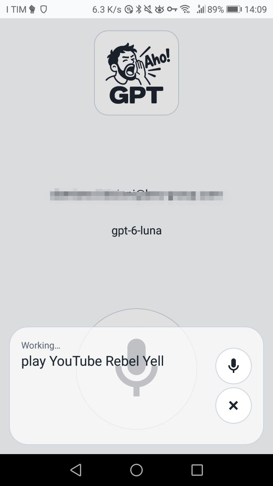

01 / Voice
Keep talking
Spoken answers and automatic follow-up listening. Temporary context, with no saved chat history.
Android · TV · Wear OS
Aho! GPT connects ChatGPT or a custom AI server to your device. Ask questions and act across apps by speaking.
Explore the project ↗01 / Voice
Spoken answers and automatic follow-up listening. Temporary context, with no saved chat history.
02 / Actions
Open apps and use available actions. Optional screen access lets the assistant read text and use visible controls.
03 / Choice
Pick your model, speech voice and recognition language. Control tools individually and check device access.
No chat screen, wake word or background listener. Built for touch, remotes and watches.
Models and limits depend on your AI provider. Custom servers can include llama.cpp. Actions depend on Android permissions and app support. This is an unofficial app.
